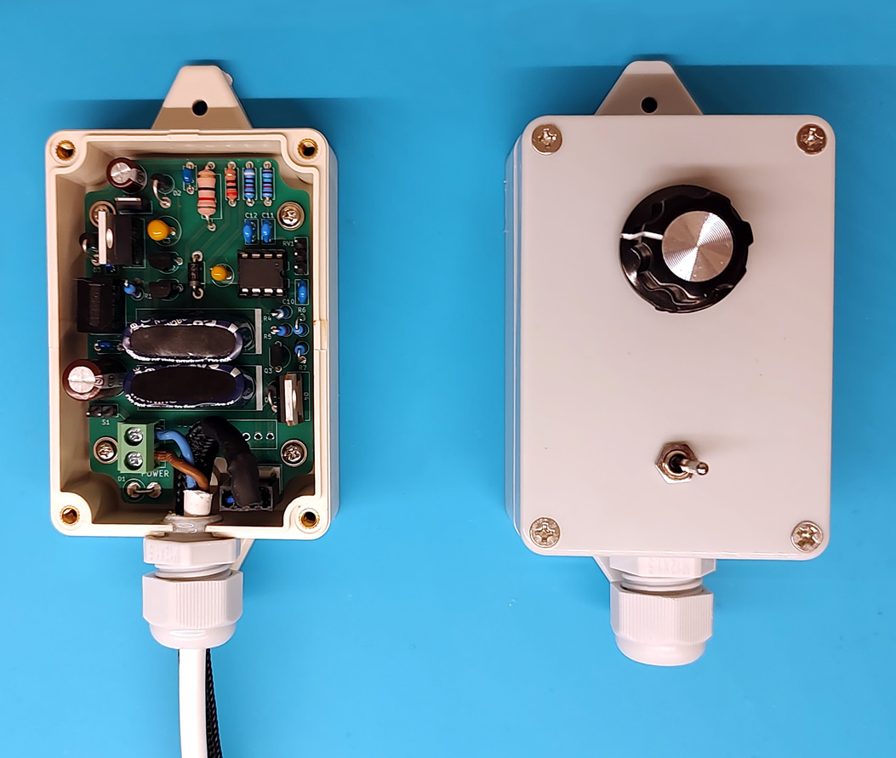

Solar Fan Controller - SOLFACON
An efficient fan controller designed for solar powered sustainable / off-grid ventilation

While having a fan controller for solar powered ventilation is not a strict necessity, it can vastly improve on important parameters such as how often and how long the fan is running. If you have ever connected a fan to a solar panel, you might already have experienced some of the potential pitfalls:
- The fan does not start
Electrical motors (and electrical fans) need a lot of power to turn on. Even if they only consume 1W when running at their rated maximum speed, they can often need three times as much for the first couple of seconds. There might be enough solar energy to keep a fan running, but not enough to start it. Connecting more than one fan, cloudy weather, suboptimal solar panel placement/angle, etc only exacerbates the issue.
- Frequent start and stop
In fluctuating light conditions, such as light clouds or moving foliage, the fan might start and stop repeatedly leading to reduced efficiency.
- Fan runs too fast / smells weird
Solar panels sold as "12V" commonly output a much higher voltage, close to 20-26V. Many fans, like the 12V fans used in computers and other electronic equipment, are not built for such high voltages and will wear out quickly.
- Fan noise
Fans can be noisy when they run unregulated at their maximum speed, and if the power supply is not constant, the sound of them spinning up and down can be quite annoying.
- Low efficiency
One might think that connecting a 20W solar panel to two 3W fans would be more than enough to keep them running throughout the day, but that is not always the case. Those 20W are the maximum power output at a very specific voltage, and if that voltage is not efficiently down-converted to the voltage that the fans operate at, a lot of the power will go to waste as heat.
- Short fan lifespan
In addition to increased wear from frequent start/stop cycles and over-voltage, the fan can also stall fully or partially at low voltages. Some fans have built-in stall protection mechanisms, but if the fan is only partially stalled or not receiving enough power for the stall protection to work, it can wear down prematurely.
This controller is designed to address all of the above problems, and you can build your own for 20-40€ depending on which features you want.
Feature overview:
- Low light operation and assisted fan start (optional)
This controller compensates for low power scenarios, whether due to partial clouds or sub-optimal solar panel placement, by using what ever power is available to charge two super capacitors, and use this energy to kick start the fans or keep them running temporarily. One fan can run for more than 1½ minute on the stored energy even if there is not enough power to keep the fan running constantly.
- Adjustable fan speed (optional)
Set a maximum speed according to your needs or preferences. The controller measures the available power and adjusts the fan speed via PWM accordingly (only usable with 4-pin PWM fans).
- Works with standard 3-pin and 4-pin 12V PC fans
Reuse what you have or buy a new inexpensive standard fan.
- Directly connect and control 1 or 2 fans
Depending on the solar panel, you can configure the controller to power fans up to 6W total.
- On-off switch (optional)
Start and stop the ventilation system.
- PCB shaped to fit into compact black, beige or grey standard enclosure (optional)
Protect the components from dust and yourself from electric shock.
- PCB doubles as stencil for drilling enclosure holes
No need to meticulously measure component clearances or alignment to make a nice looking front panel.
- High quality components
The components listed on the BOM are of high quality to ensure a long service life. You can substitute the ones on the BOM with your own as you see fit.
- Operating temperatures from -20°C to 50°C
Let the ventilation system run all year round.
- Easy to modify and hack
Customize the software to your needs or integrate the controller with other devices. There are two unused MCU pins (pin 1 and 5).
How to build
Go to the Configuration tool & build instructions page to configure your own controller, see the BOM, and read the build instructions.
How to use
Operation is straight forward and simple. Use the switch to turn the controller on or off, and use the dial to set a desired max fan speed.
The controller is programmed to compensate for fluctuating power input and maintain a desired fan speed. The speed of the fan can be lower if there is not enough power available, but it will never go higher than the desired speed. This also means, that the higher the max speed is set, the less headroom is available for the controller to compensate for fluctuating power input. For this reason, if the dial is set to max (turned clockwise as far as possible), there is nothing the controller can do to maintain that speed, and instead, the controller goes into adaptive speed mode, where it dynamically adjusts the fan speed to keep the fan running for as long as possible and as fast as possible. The adaptive speed mode is more power efficient, as using PWM to lower the fan speed consumes less energy than letting the voltage drop, but the fan speed/noise will however fluctuate more.
Hacks and ideas
3mm LEDs to see the status of the controller [$ - Easy]
A red LED to indicate that the 12V rail is powered, a yellow LED to indicate that the 3.3V rail (and MCU) is powered, a green LED to indicate that the MCU has enabled the fan. Pin 5 of the MCU is already programmed to go HIGH then the fan is enabled and LOW when disabled. Connect a 680Ω resistor in series with the yellow and green leds, and a 5.1KΩ resistor in series with the red LED. The LEDs combined will consume more power than the fan controller alone, but it can be useful or interesting to see what's going on. If power consumption is a concern, you can connect a switch between the LEDs and ground such that they can be enabled or disabled.
Temperature controlled operation [$ - Hard]
Connect a temperature sensor to pin 1 or 5, and modify the source code to read temperature values and control the fan accordingly. Pin 5 is not connected to anything and can be used for digital (single wire) sensors. Pin 1 can be used for both analogue and digital sensors, but since this pin is the MCU reset pin per default, you must first cut the PCB trace coming from 3.3V to the pin, and program the MCU fuses accordingly.
Q&A
- How long does it take for a solar powered ventilation system like this to break even?
That depends on several factors, such as the cost of electricity and whether or not there is mains power where you want ventilation, but a solar panel + 2 fans + controller VS a similar mains powered system breaks even after about 5 years. However, a mains powered system can be on 24/7 whereas the solar powered system is completely dependent on sun and independent of the availability of another power source.
- Why use both a switching regulator and an LDO?
The LDO handles low-power scenarios with minimal heat dissipation, while the switching regulator efficiently powers the controller and fan in high-power scenarios. Although a solar panel's voltage does not change much even at varying light levels, it can drop significantly as soon as current is drawn. Without the LDO, this could lead to oscillations, where the switching regulator could be cycling on and off as the voltage fluctuates. Using both the LDO and the switching regulator optimizes efficiency, minimizes heat, and allows reliable operation across variable solar conditions.
- Why was an 11V start voltage chosen for the fan, and why does it stop at 4V?
The 11V start threshold ensures that the switching regulator and LDO can always supply at least that voltage. It also strikes a balance between the time it would take to wait for a usable charge of the super capacitors, and how long allows the super capacitors to keep the fan running. The fan stops at 4V to prevent stalling with a little margin, because P12 fans stall at ~3.5V and produces minimal air pressure between 3.5V and 4V.
- Why not use a battery instead of capacitors?
Super capacitors are ideal for rapid and frequent charge and discharge cycles without degradation, making them better suited than batteries for handling variable solar input and a wide range of operating temperatures. In contrast, many rechargeable batteries cannot reliably operate at -20°C and degrade faster with every charge cycle. Super capacitors also allow the fan to operate frequently, even in low or indirect light, rather than waiting for a usable battery charge. Frequent operation is often more desirable than infrequent (but longer) cycles in regards to ventilation.
- Why not add a battery in addition to the capacitors, and charge them only when there is surplus power?
This would be possible, but would require additional circuitry. Feel adapt the design to add any features you like. A goal for this controller was that it should be able to run without intervention or maintenance for 10 years, at operating temperatures down to at least -20 degrees Celsius, which is difficult to meet with batteries. All the parts (except for the potentiometer) are specced to operate down to -40.
- Why was the Arctic P12 fan chosen?
The P12 is affordable, widely available, and optimized for air pressure, making it ideal for pushing air through vents or ducts, even when obstructed by grilles or insect nets.
- Does it work with other fan models than the Arctic P12?
Yes, but the pre-calculated fan speed/voltage model may not be fitting for other fans. If you use a 3-pin fan, the fan will run fine but the max speed cannot be set. In these cases, you could leave this part of the circuit out and save a little money.
- Why not use the fan tachometer output to make adjustments on the fly to support all 4-pin fans?
A calibration routine could in principle be coded into the ATtiny85 MCU, where the max RPM could be determined by reading the tachometer for a period of time at max voltage.
However, the Intel specifications for PC fans state that the tachometer output should be pulled up to 12V with a pull-up resistor. Since this fan controller operates at voltages down to 4V, there is no guarantee that reading the fan tachometer will be reliable or possible. Even if the tachometer could be read directly using an MCU pin with an internal pull-up to 3.3V, a number of fans have the 12V pull-up resistor built in, which would pose a great risk to the MCU.
All in all, the viability of this solution would be completely dependent on the internal construction of the fan, and it would require a number of additional components. It is cheaper and easier to calculate a new fan speed/voltage model.
- How does the design handle heat and manage inrush current?
The LDO and the switching regulator are both able to handle 1A of continuous current draw (but remember that only one is active at a time). The super capacitors charge through resistors, limiting inrush current to prevent them from acting as a short circuit to the LDO or switching regulator. The super capacitors draw a brief maximum of ~200mA when charging from 0V, and two P12 fans peak at around 400mA during the start-up phase, but the MCU code is designed such that both events should not happen simultaneously. If the supply voltage exceeds 14V, then the switching regulator takes over, relieving the LDO of the load before it will have to supply a large current. If the supply voltage instead drops, both the super capacitors and the fans will draw less current by nature.
- How does the controller handle extreme voltage fluctuations from the solar panel, especially sudden spikes or drops?
A capacitor helps smoothen fluctuations at the LDO and switching regulator's input. At the output, the super capacitors handle these fluctuations effectively, stabilizing the voltage for the fans and preventing sudden drops or spikes. This smoothens fan operation even in variable solar conditions.
- What happens if the super capacitors fail, degrade, or lose capacity over time?
If the super capacitors short out, the charging resistors protect the regulators from a direct short. If they become resistive rather than capacitive, nothing much will happen. Efficiency will however drop significantly in these situations, but there will be no damage to other components. This design safeguards the rest of the system from typical capacitor degradation scenarios, and replacing only the failed capacitors will make the controller operational again.
- How does it scale with additional load from more than one fan?
The recommended maximum continuous current draw for all fans combined is ~500mA. For loads of this size, it is recommended to increase the capacity of the super capacitors to 1F to support the additional current requirement. The super capacitors' peak charging rate is circa 200mA, and the LDO and switching converter is rated up to 1A, but some headroom should reserved for the extra current consumptions that occurs when the fans start from 0 RPM, which is often well above their regular current draw. The regulators can handle short current spikes above 1A, but is not recommended indefinitely for reliability and durability reasons.
- How does the controller manage the extra current draw when the fan starts up, especially with multiple fans?
Fans do not start until the 12V rail is above 11V, and PWM enabled fans only run at 20% speed for the first three seconds. The super capacitors can also supplement the current to ensure smooth fan startup without causing dropout or stalling.
- What safeguards are in place to prevent overheating or component damage if the fan stalls or the controller experiences high temperatures?
For temperature, the controller should not be placed in direct sunlight but it should be good for ambient temperatures up to approximately 50°C (NB: estimated through enclosure and heat dissipation calculations, but not tested). The controller is designed for high efficiency and low heat dissipation. Arctic P12 fans have built-in stall protection that prevents damage if they are blocked.
- Is it safe to let the solar panel voltage drop under load rather than maintaining an optimal voltage?
Yes, allowing the solar panel voltage to drop under load is generally safe, especially for small setups like this. Solar panels are designed to adapt to varying load conditions and will naturally reduce their output voltage if more current is drawn. This will not harm the panel, as they are built to handle a range of load scenarios without damage. This fan controller is specifically designed to handle and operate in low voltage scenarios.
- Why not tightly control current draw to maintain the panel's optimal voltage, like an MPPT controller?
For small solar setups like this, the added complexity and cost of tightly controlling current draw to maintain maximum power point are not necessary. Instead, the system is designed to work effectively across a wide range of voltages, allowing fan operation even in low-light conditions. The super capacitors in the design also help smooth out fluctuations, making strict voltage control less critical.
- For 10€ I can buy an MPPT or switch mode solar battery charging controller from AliExpress, why should I pay more for this?
Unlike basic MPPT or switch-mode charge controllers, this system is specifically designed for running a fan directly from solar power, even in low-light or variable sunlight conditions, without requiring a battery. Most battery charging controllers are, as the name suggests, designed for being good at charging batteries, not for driving or controlling fans. This controller is also likely to last longer.
- Why not use PWM for the GND or 12V connection such that the speed of 3-pin fans can be controlled as well?
Using PWM on the GND or 12V line of a 3-pin fan is possible, but there are practical issues. Fan speed does not scale linearly with voltage or PWM duty cycle, so you must calibrate the voltage and PWM-to-RPM relationship for each fan. Additionally, the tachometer signal, which measures RPM, only works when the fan is powered on. Applying PWM to the power or ground line naturally means that the fan will be unpowered at specific intervals, making tachometer readings unreliable. Since 3-pin fans lack a dedicated PWM control pin, this method has significant limitations. If you have a 3-pin fan already then it will be good to reuse it, but if you are buying a new fan, the price of 4-pin PWM models is not much higher than 3-pin models.
- Why turn the fan on/off by enabling or disabling the connection to ground? You should be switching PC fans high-side!
Switching PC fans on/off by disconnecting ground can be risky because the fan's tachometer or PWM pins might still find a ground path, potentially damaging the fan. For this reason, high-side switching (controlling the 12V connection) is generally preferred, but would be more complex to do with this controller, as the MCU operates at 3.3V and high-side switching typically requires a P-channel MOSFET, which would need a driver circuit. Instead, this controller uses an N-channel MOSFET to sink the fan's PWM pin to ground. When the MCU switches the fan off, this MOSFET stops conducting as well, leaving no connection to ground via the PWM pin and thus preventing damage.
- Can I run the fan controller and fan on water or wind energy?
Yes, as long as the power source can supply enough current for the fan, and the nominal input voltage is between 15V and 25V and never above ~30V.
- Why does it have such a stupid name?
I wanted to write "Solar Fan Controller" on the PCB, but there was not enough room for it. And it made for a shorter GitHub project name.